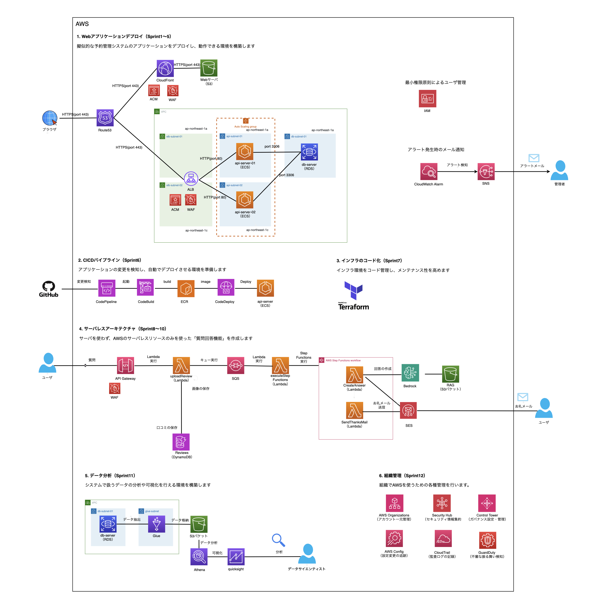
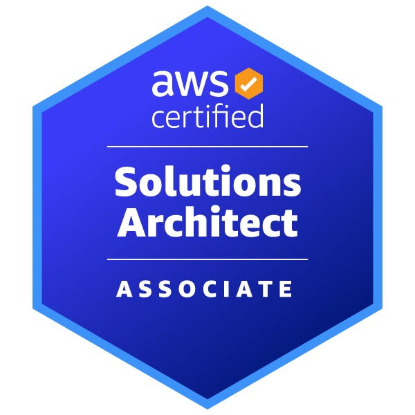
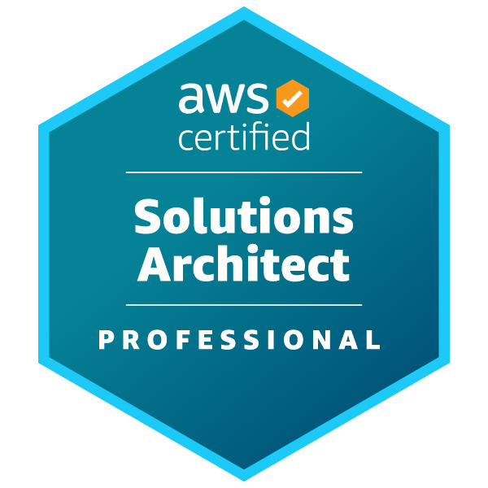

AWS 関係の制作物
AWS サーバーレス お問い合わせフォーム
AWS の主要サービス（API Gateway／Lambda／DynamoDB）を利用して、静的 Web フォームから入力を受けて API 経由でデータ保存まで行う構成を実装。
セットアップ手順に加え、CORS や CSP などセキュリティ対応もREADME に記載しています。

独自のRAGを用いたチャットボットの構築
Amazon Bedrock／Amazon Lex／Amazon Connect
を連携して、Webサイト埋め込み型のチャットボットを構築。
READMEには構成図、前提条件、設定手順、CSPや文字数制限などのトラブルシューティングも記載しています。

Terraform によるサーバーレス API 構築
Terraform を用いて、API Gateway／Lambda／DynamoDB
の構成をコードで管理。可用性を高めるため、環境変数やリージョン設定を外部ファイル（tfvars）で管理する仕組みを実装。
tfstate を S3 バックエンドに設定する構成にしています。

問い合わせ自動応答ワークフローを Step Functionsで構築
AWS Step Functions を中心に、Lambda／SQS／DynamoDB／Bedrock
を組み合わせて、問い合わせ受付からカテゴリ判定・自動応答生成までを自動化するサーバーレスワークフローを設計。
各 Lambda に環境変数を設定し、Bedrock連携による自然言語応答を実装しました。

CloudTech Academyでの学習内容
（2025/5～2025/11）
ばーやん（@baayan_public）さんにメンターに付いていただき学習しました。各回課題を提出し、ハンズオン実践のレビューをいただきました。

引用：https://docs.cloud-tech.com/cloudtech-academy-2
| インフラ学習 | VPC、ALB、Auto Scaling、RDS(Multi-AZ)、Route53、CloudFront、ACM、IAM、S3 |
|---|---|
| コンテナ | Docker、ECS(Fargate)、ECR |
| サーバーレス | Lambda(Python)、API Gateway、DynamoDB、SQS、SES、Step Functions、EventBridge |
| データ分析 | Glue、Athena、QuickSight |
| CI/CD | CodePipeline、CodeBuild、CodeDeploy |
| IaC | Terraform |
| 監視・運用 | CloudWatch、CloudWatch Alarm、AWS Config、Systems Manager、OU |
| AI | Bedrock |
AWS 関係の取得資格

